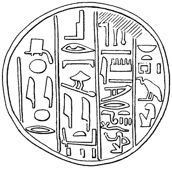
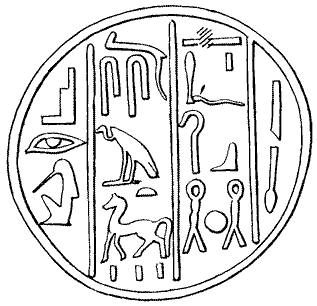
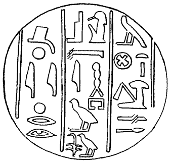
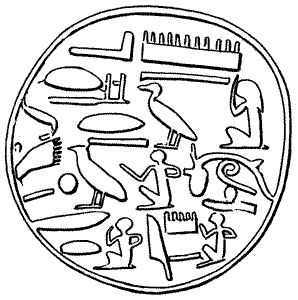

- Home
- Finds home
- Finds by date
- Finds by type
- Conservation
- Slideshow
- Site general
Funerary cones
|
Cone-shaped objects of fired Nile mud, stamped on one end, are very commonly found in Thebes. The stamps bear the names and titles of officials. The standard collection of these objects is Norman de Garis Davies and M.F. Laming Macadam, A Corpus of Inscribed Egyptian Funerary Cones I (Oxford 1957). The numbers of this publication will be referred to here as Corpus nnn; the drawings below are taken from this publication. It is probable that these objects formed part of the decoration of the facade of the tomb, and the names on them are those of the tomb owner. Many more cone types have been found than can be attributed to known tombs. However, cones have only on two occasions been found in situ. The first time was nearly 150 years ago, above an 18th dynasty tomb (A.H. Rhind, Thebes: Its Tombs and their Tenants (London 1862), 136-8), and the other was a series of unstamped cones above an early Middle Kingdom tomb (H.E. Winlock, in Bulletin of the Metropolitan Museum of Art Part II, February 1928, fig. 4-5). Some illustrations of tomb facades in the decoration of some tombs show a possible row of circular objects above tombs. A considerable number of the cones found in the TT99 excavations certainly bore the name and titles of Senneferi (see first tab below). Two cone types were found in significant quantities. The name on the first (Corpus 154) is clearly Sennefer; that of the name of the owner of the second cone is unclear, but examination of many examples, some clearer than that copied by Davies, indicate that it was also Sennefer, as reconstructed below; the titles on the stamp are nearly all found in the tomb. More than one cone from a tomb is quite plausible. The long stamp was also found on several bricks. As the objects are quite portable, cones from other tombs are frequently found in addition to those which can be shown to have belonged to the tomb owner. The four other tabs below give some further examples.
(Corpus 55) 
(Corpus 98) 
(Corpus 163) 
(Corpus 374) 
|
||||||||||||||||||||||||||||||||||||||||||||||||||||||||||||||||||||||||||||||||||||||||||||||||||||||||||||||||||||||||||||||||||||
The following table summarises the origin of all the inscribed cones found in TT99.
|
||||||||||||||||||||||||||||||||||||||||||||||||||||||||||||||||||||||||||||||||||||||||||||||||||||||||||||||||||||||||||||||||||||
© Nigel Strudwick 1997-2016